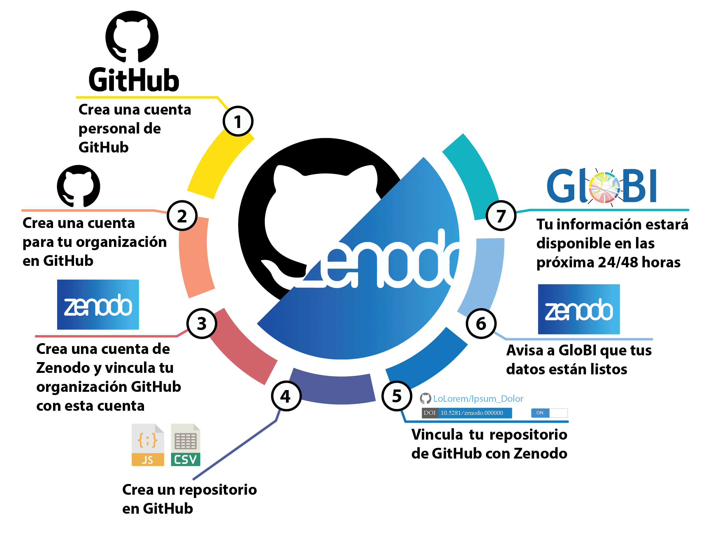
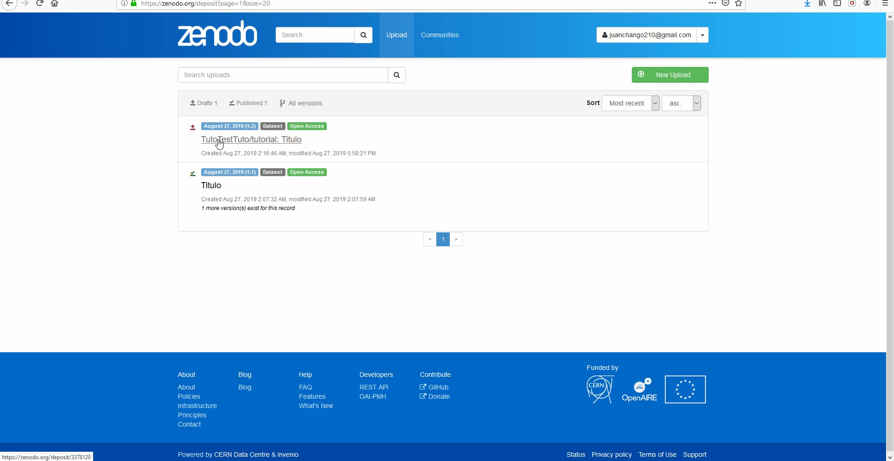

Comparte tus datos con GitHub y Zenodo

Paso 1
Crea una cuenta personal de GitHub
- Visita la pagina de igreso de GitHub.
- Ingresa tu nombre de usuario, correo electrónico y contraseña.
- Selecciona el tipo de cuenta que requieras, la cuenta gratis funciona bien.
- Ahora tienes una cuenta personal de GitHub
Paso 2
Crea una cuenta para tu organización en GitHub
- Visita la pagina de igreso de GitHub
- Ingresa el nombre de usuario de tu organización, correo electrónico y contraseña.
- Selecciona el tipo de cuenta que requieras para tu organización, la cuenta gratis funciona bien.
- Transforma la cuenta personal de tu organización en una cuenta para organizaciones de GitHub.
- Selecciona el administrador de la organización (pueden ser más de una persona)
- Ahora esta cuenta dejó de ser personal y comenzó a ser una cuenta para organizaciones de GitHub
Paso 3
Crea una cuenta de Zenodo
- Visita la pagina de igreso de Zenodo.
- Crea una nueva cuenta.
- Selecciona ingresar con GitHub (Sign up GitHub).
- Puedes autorizar ("Grant") a Zenodo que se vincule con tu cuenta de Organizacion de GitHub. Si no lo haces puedes dar la autorizacion desde GitHub.
- Autoriza ("Grant") a Zenodo que se vincule con la cuenta de tu organización de GitHub, desde tu cuenta personal/administrador de GitHub.
- Tus cuentas están vinculadas.
Paso 4
Crea un repostorio en GitHub
- Ingresa a tu cuenta personal de GitHub.
- Da click en New.
- Nombra y crea un nuevo repositorio.
- Ahora tu repositorio está listo par subir tus datos.
Para subir archivos a tu repostiroio es necesaio que des click en "Upload files".
- Arrastra o selecciona los archivos que quieras subir a tu repositoro.
- Espera a que todos los archivos terminen de cargar antes de abandonar la pagina.
- Ahora tus archivos están disponibles en GitHub.
N o t a
En este punto es importate realizar un control de calidad de tus datos. Para más información visita el Tutorial de Travis
Paso 5
Vincula tu repositorio de GitHub con tus cargas de Zenodo
- Ingresa a tu cuenta pesonal de Zenodo.
- Dentro de Zenodo ve a la pestaña de GitHub
- Habilita ("ON") el interruptor para que Zenodo acceda a tu repositorio
- Al publicar tu repositorio en Zenodo obtendra un DOI único.

- Ahora tu repositorio está publicado en Zenodo
I M P O R T A N T E: El vincular tu repositorio de GitHub con Zenodo facilita el manejo de nuevas versiones de tu base de datos.
- Cuando liberes una nueva versión de tu repositorio en GitHub, automaticamente se actualizará la versión de Zenodo.
Paso 6
Avisa a GloBI que tus datos están listos
- Ingresa a tu cuenta pesonal de Zenodo.
- En tu cuenta ve a cargas (Upload)
- Edita tu carga.
- Seecciona la comunidad de "Global Biotic Interactions"
- Completa todos los metadatos de tu carga.
- Publica tu edición.
- ¡Felicidades! haz avisado a GloBI que tienes una nueva versión de tus datos.
Si tus datos cumplen los requisitos y pasan el control de calidad de GloBI estarán disponibles en las proximas 24 a 48 horas, de lo contrario nos comunicaremos contigo para poder solucionar
el probema y facilitar la carga y formato de tus datos.
Arriba.